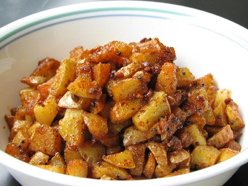

How to Prepare Potato Stir Fry

Description
A potato stir fry is a South Indian recipe that is very popular in Tamil Nadu. It is made with peeled potatoes and
tastes very good with curd rice. It is a very simple dish to make and it takes just 15 minutes to prepare.
Ingredients
- Large Peeled Potatoes - 3
- Oil
- Chilli Powder
- Pepper Powder
- Urad Dal
- Mustard seeds
- Salt
Preparation
- Add two teaspoons of oil to a hot iron pan.
- Once the oil heats up, add some mustard seeds.
- As the mustard seeds start to pop, add in the dried Urad dal.
- Add the peeled potatoes in the frying pan and saute it for a few minutes.
- If you are using unboiled potatoes, add enough water to submerge the potatoes and allow it to boil.
- Once the potatoes are boiled and soft, allow the excess water to evaporate.
- Add the spices: Chilli powder, Salt, and Pepper Powder.
- For garnish, you can also add some coriander leaves to the stir fry.
- The tasty, spicy and crunchy Potato Stir Fry is ready to eat.